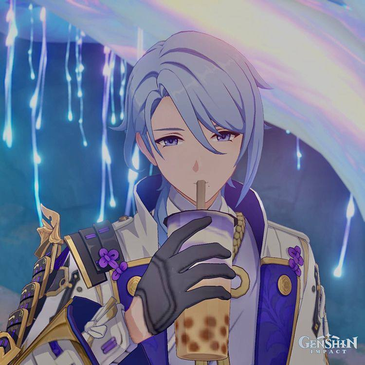

Ayato's favorite drink -
Boba milk tea

Description
Variety is the spice of life.
In that sense, the Milk Tea Medley they
started serving over in Hanamizaka
recently isn't half bad.
You should try it sometime.
Ingredients:
- Black tea - 10 g
- Sugar - 40 g
- Hot water - 330 ml
- Milk - 500 ml
- Frozen tapioca balls - 40 g
- Heavy cream - 450 ml
- Purple potato powder - 10 g
- Cream cheese - 60 g
- Condensed milk - 75 g
- Pink salt - 2 g
Steps
- Put the black tea leaves and the sugar on a frying pen, low heat;
- Add hot water, then add the milk;
- Pour the liquid through a sieve;
- Add the tapioca balls into the boiling water;
- Add heavy cream onto the frying pen, medium heat, add purple potato powder and mix, add some sugar too;
- Whip some heavy cream, add cream cheese, condensed milk and pink salt, whip again;
- And whip some more heavy cream with the fried potato powder;
- Now put it all together: pour the tea, put the tapioca balls, and add two mixes of whipped cream
And that's it!